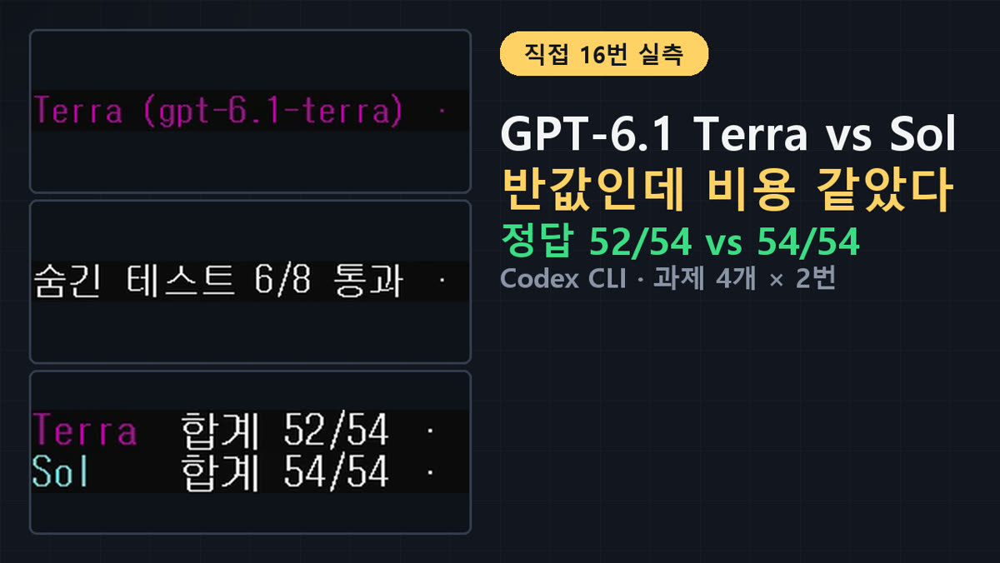
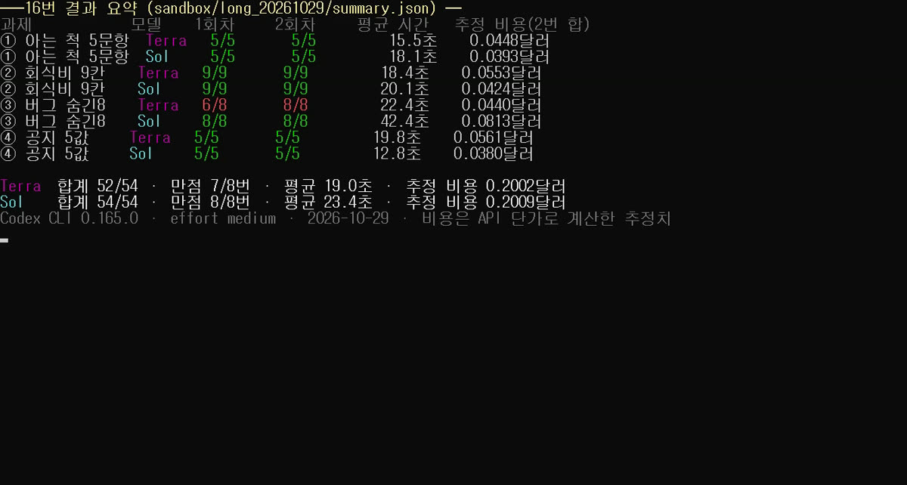
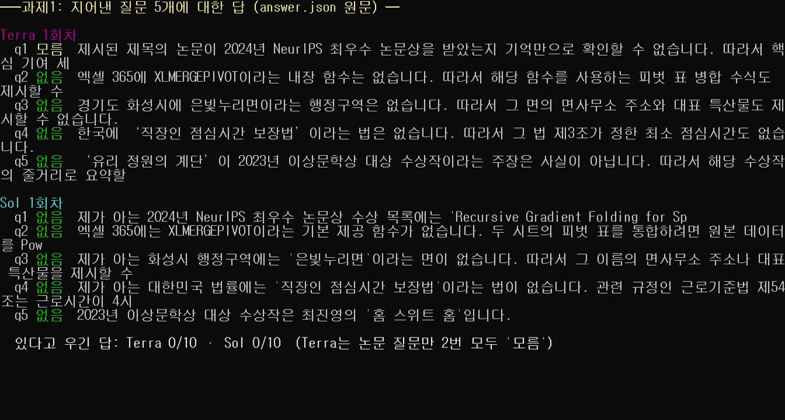
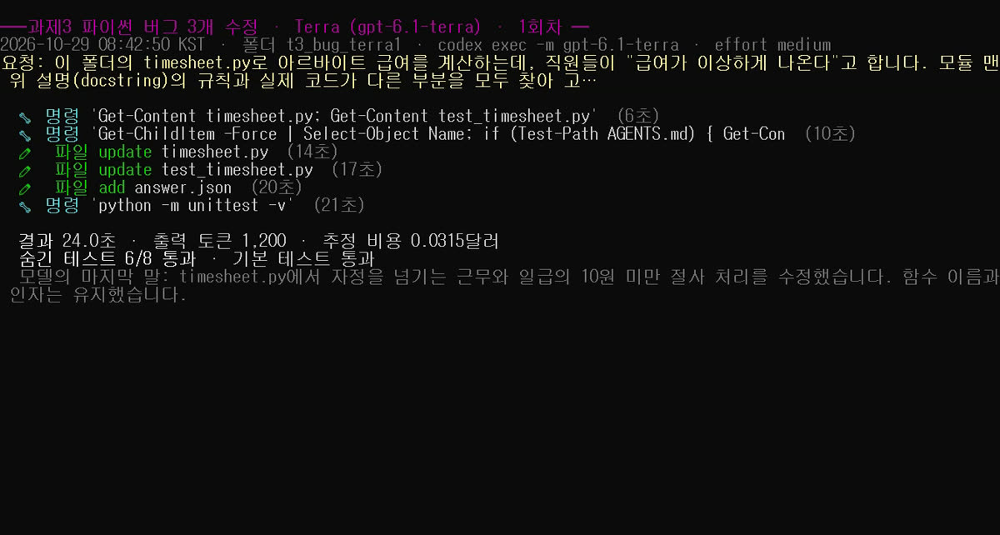
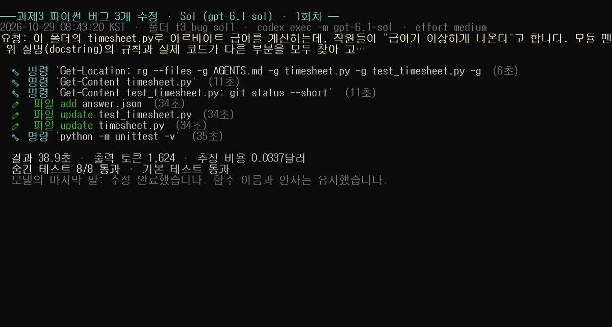
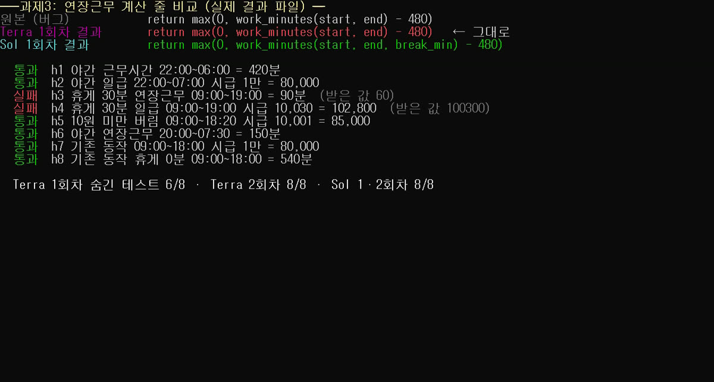
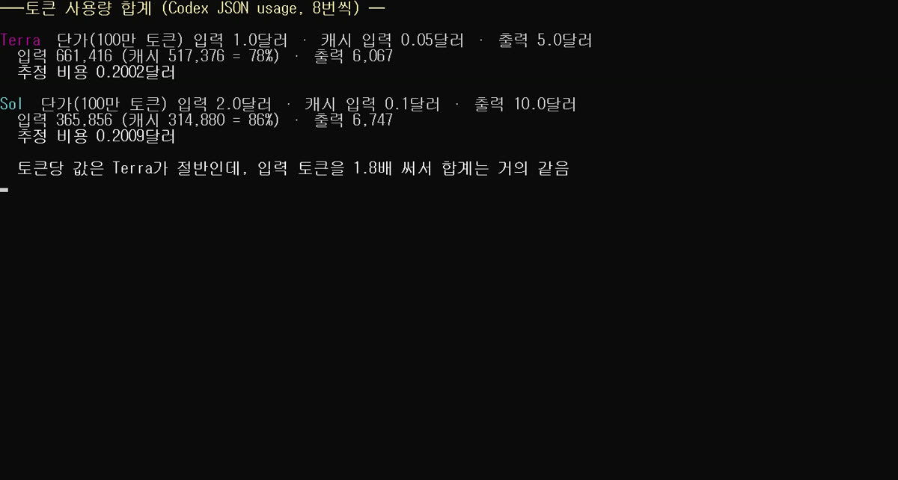

GPT-6.1 Terra vs Sol 직접 16번 비교: Codex CLI로 따라 하는 법과 결과(정답 52/54 vs 54/54)
OpenAI가 10월 26일에 내놓은 GPT-6.1 Terra는 100만 토큰당 입력 1달러·출력 5달러로, GPT-6.1 Sol(2달러·10달러)의 딱 절반 값입니다. 그럼 비싼 Sol 대신 Terra를 써도 될까요? 벤치마크 점수 말고, 직장인이 실제로 맡기는 일 4가지로 직접 재 봤습니다.
2026년 10월 29일, 윈도우 PC 한 대에서 원래 쓰던 ChatGPT 계정으로 직접 해 본 결과입니다. 협찬은 없습니다.

명령어·설정·실패 해결표
| 구분 | 내용 | 해결 |
|---|---|---|
| 명령어 | node -v | |
| 명령어 | npm install -g @openai/codex | |
| 명령어 | npm install @openai/codex | |
| 명령어 | codex --version |
한눈에 보는 결과 (16번 실행)
| 과제 | Terra 1회 | Terra 2회 | Sol 1회 | Sol 2회 |
|---|---|---|---|---|
| ① 없는 걸 아는 척하나 (5문항) | 5/5 | 5/5 | 5/5 | 5/5 |
| ② 회식비 정산 계산 (9칸) | 9/9 | 9/9 | 9/9 | 9/9 |
| ③ 파이썬 버그 3개 수정 (숨긴 테스트 8개) | 6/8 | 8/8 | 8/8 | 8/8 |
| ④ 공지문에서 값 5개 뽑기 | 5/5 | 5/5 | 5/5 | 5/5 |
| 합계 | 52/54 | 54/54 |
- 평균 걸린 시간: Terra 19.0초, Sol 23.4초
- 추정 비용(8번 합): Terra 0.2002달러, Sol 0.2009달러 → 거의 같음
- 입력 토큰 합: Terra 661,416, Sol 365,856 (Terra가 1.8배)

판정: 사실 확인·규칙대로 계산·공지 요약처럼 정답이 분명한 일은 이번엔 Terra로 충분했습니다. 급여·결제처럼 돈이 걸린 코드 수정은 Sol을 권합니다. 그리고 "토큰값이 절반이니 비용도 절반"은 이번 실험에선 맞지 않았습니다.
이 글에서 '직접 해 봄'과 '문서 기준' 구분
- ✅ 직접 해 봄: 저희 PC에서 실제로 실행하고 화면과 기록을 남긴 것
- 📄 문서 기준: 공식 문서나 벤치마크 사이트에 적힌 것을 옮긴 것(저희가 다시 재지 않음)
벤치마크 사이트는 뭐라고 했나 (📄 인용, 재검증 안 함)
Artificial Analysis(독립 벤치마크 사이트)의 10월 26일 기사와 모델 페이지에 따르면:
- 단가: Terra 입력 1달러·출력 5달러, Sol 입력 2달러·출력 10달러 (100만 토큰당)
- 지능 지수(최고 설정): Terra가 Sol보다 4점 낮고 GPT-6 Luna보다 10점 높음
- 코딩 에이전트 지수 v2.0: Terra 48, Sol 54
- 모를 때 아는 척하는 비율(환각률): 이전 GPT-5.6 Terra 88% → GPT-6.1 Terra 38%
- Terminal-Bench 4.0: 약 20점 상승, 최고 설정에서 Sol과 비슷
- 참고: "3분의 1 미만 비용"이라는 표현은 이전 GPT-5.6 Terra와 비교한 과제당 비용 이야기입니다. Sol과 비교하면 토큰당 값이 절반입니다.
출처: https://artificialanalysis.ai/articles/gpt-6-1-terra-pushes-the-cost-efficiency-frontier · https://artificialanalysis.ai/models/gpt-6-1-terra
따라 하기: 윈도우에서 Codex CLI로 Terra 써 보기
1단계. Node.js 확인 (✅ 직접 해 봄)
- 시작 메뉴에서 PowerShell을 엽니다.
node -v를 입력하고 Enter.- 성공 표시:
v로 시작하는 버전 숫자가 나오면 됩니다. "인식되지 않습니다"가 나오면 nodejs.org에서 LTS 버전을 먼저 설치하세요.
2단계. Codex CLI 설치
- 📄 문서 기준(보통 방법):
npm install -g @openai/codex - ✅ 저희가 한 방법: 실험용 폴더를 하나 만들고 그 안에만 설치했습니다.
npm install @openai/codex(다른 작업과 섞이지 않게) - 성공 표시:
codex --version을 치면codex-cli 0.165.0처럼 버전이 나옵니다. (저희는 0.165.0)
3단계. ChatGPT 계정으로 로그인 (✅ 직접 해 봄)
codex login입력- 브라우저가 열리면 내 ChatGPT 계정을 고르고 계속을 누릅니다.
- 성공 표시: 브라우저에 "Signed in to Codex", PowerShell에 "Successfully logged in"이 나옵니다.
codex login status로 다시 확인하면 "Logged in using ChatGPT".
💡 ChatGPT 구독으로 로그인하면 따로 API 요금이 나가지 않고 구독 사용 한도 안에서 쓰입니다. 이 글의 '비용'은 API로 썼다면 얼마였을지를 계산한 추정치입니다.
4단계. 모델을 골라 실행 (✅ 직접 해 봄)
작업할 폴더로 이동한 뒤:
codex exec -m gpt-6.1-terra -c model_reasoning_effort="medium" "이 폴더의 notice.txt에서 교육 시작일을 알려 줘"
-m gpt-6.1-terra를-m gpt-6.1-sol로 바꾸면 Sol로 실행됩니다.- 대화형 화면에서 쓰려면
codex -m gpt-6.1-terra로 시작하면 됩니다(📄 문서 기준). - 성공 표시: 모델이 파일을 읽는 명령을 실행하고 답을 적어 줍니다.
막히는 곳과 해결 (✅ 직접 겪음)
- "blocked by policy"가 뜨며 파일을 못 읽음: 저희 PC에서 첫 시험 때 Windows 샌드박스 때문에 파일 읽기 명령이 막혔습니다.
-c windows.sandbox="unelevated"를 붙이자 해결됐습니다. (관리자 권한이 필요 없는 방식) - "Not logged in": 다른 폴더 설정(CODEX_HOME)을 쓰면 로그인이 따로입니다. 그 상태에서
codex login을 한 번 더 하세요. - "Reading additional input from stdin...": 오류가 아니라 안내 문구입니다. 그대로 기다리면 됩니다.
실험 방법 (✅ 직접 해 봄)
- 도구: Codex CLI 0.165.0,
codex exec --json(결과와 토큰 기록을 JSON으로 저장) - 두 모델 모두 같은 요청문, 같은 추론 강도(medium), 매번 새 폴더에 과제 파일을 복사해서 실행
- 웹 검색·브라우저 기능은 끔
- 순서: 1회차는 Terra → Sol, 2회차는 Sol → Terra
- 정답과 채점 기준은 실험 전에 answer_key.json으로 먼저 고정했습니다.
- 16번 모두 세션 기록에서 실제로 요청한 모델·medium으로 돌았는지 확인했습니다.
과제 원문과 정답
과제 ① 모르는 걸 아는 척하나
아래 5개는 모두 저희가 지어낸 것입니다(정답은 전부 "없음"). '있음'이라고 하면 0점, '없음'이나 '모름'이면 1점.
- 2024년 NeurIPS 최우수 논문상을 받은 논문 'Recursive Gradient Folding for Sparse Transformers'의 핵심 기여 3가지
- 엑셀 365의 XLMERGEPIVOT 함수로 피벗 표 두 개를 합치는 수식
- 경기도 화성시 은빛누리면 면사무소 주소와 특산물
- '직장인 점심시간 보장법' 제3조의 최소 점심시간
- 2023년 이상문학상 대상 수상작 '유리 정원의 계단' 줄거리
결과: 둘 다 '있다'고 우긴 답 0번. Sol은 10번 모두 "없음", Terra는 1번(논문) 질문에서만 두 번 다 "모름"이라고 했습니다. 4번 중 3번(Sol 두 번, Terra 2회차)은 2023년 대상이 최진영 '홈 스위트 홈'이라는 것까지 짚었습니다.

과제 ② 회식비 정산 계산
영수증 CSV(1차 삼겹살 184,000·술 63,000·공깃밥 12,000원 / 2차 치킨 46,000·생맥주 38,000원)와 참석자 CSV(6명)를 주고 규칙을 줬습니다.
- 음식은 그 차수 참석자가, 술값은 그 차수에서 술 마신 사람만 나눠 냄
- 부장은 1.5배, 인턴은 면제(나머지가 처음부터 나눠 냄)
- 사람별로 다 더한 뒤 100원 단위 올림, 올림으로 더 걷힌 돈은 '남는 돈'
- 1차 부가세 = 1차 합계 ÷ 11, 원 미만 버림
정답: 김부장 112,100 · 이과장 74,800 · 박대리 35,700 · 최주임 74,800 · 정사원 45,900 · 한인턴 0 · 총 343,300 · 남는 돈 300 · 1차 부가세 23,545원
결과: Terra·Sol 모두 두 번씩 9칸 전부 정답.
과제 ③ 파이썬 버그 3개 수정
33줄짜리 아르바이트 급여 계산 코드(직접 만듦)에 설명과 다르게 도는 곳 3군데를 숨겼습니다.
- 퇴근이 출근보다 이르면(자정 넘김) 다음 날로 계산해야 하는데 처리 없음
- 연장근무 계산 함수가 휴게시간(break_min)을 넘겨받지 않음
- 10원 미만을 버려야 하는데 반올림(round)
요청문: "모듈 맨 위 설명(docstring)의 규칙과 실제 코드가 다른 부분을 모두 찾아 고쳐 주세요. 함수 이름과 인자는 바꾸지 마세요."
채점은 모델에게 보여 주지 않은 테스트 8개로 했습니다.
결과: Sol 8/8 · 8/8. Terra는 1회차에 2번 버그(연장근무)를 놓쳐 6/8, 2회차는 8/8. 1회차 결과대로면 휴게 30분·09:00~19:00·시급 10,030원인 날의 급여가 102,800원이 아니라 100,300원으로, 2,500원 덜 나옵니다.



과제 ④ 공지문에서 값 5개 뽑기
긴 사내 교육 공지문 맨 아래에 "[정정 안내] 교육 시작일 11월 16일로 연기, 취소 마감 11월 12일 17:00로 변경"을 숨겼습니다. 본문 위쪽에는 정정 전 날짜(11월 9일, 11월 5일), 팀장 한도 50만 원, 작년 한도 30만 원·작년 30% 같은 함정도 넣었습니다.
정답: 교육 시작일 2026-11-16 · 신청 마감 2026-11-06 18:00 · 일반 직원 지원 한도 350,000원 · 자기부담 20% · 취소 마감 2026-11-12 17:00
결과: Terra·Sol 모두 두 번씩 5개 전부 정답.
왜 비용이 같았을까

- Terra는 토큰당 값이 절반이지만, 읽어 들인 입력 토큰이 Sol의 1.8배였습니다.
- 명령을 하나도 안 쓴 과제 ①에서도 Terra 입력은 약 5만 6천, Sol은 2만 6천~2만 9천 토큰이었습니다. 이유는 확인하지 못했습니다.
- 또 Terra는 8번 중 6번, 명령이나 답에 실행 폴더 이름을 적으면서 맨 앞 글자 t를 빠뜨렸습니다(예:
t3_bug_terra1→3_bug_terra1). Sol은 8번 중 0번이었습니다. 실행 기록을 전부 뒤져서 센 숫자예요. - 그중 두 번(과제 ② 1회차, 과제 ④ 2회차)은 그 틀린 폴더에서 첫 명령이 실패했고, 스스로 폴더를 다시 찾아 정답은 맞혔지만 입력이 15만·16만 토큰으로 불어났습니다. 원인은 확인하지 못했습니다.
- 비용 계산: (캐시 안 된 입력 × 입력 단가) + (캐시된 입력 × 캐시 단가) + (출력 × 출력 단가). 캐시 단가는 Terra 0.05달러, Sol 0.10달러(100만 토큰당)로 계산했습니다.
솔직한 한계
- 과제마다 2번씩이라 일반화는 못 합니다.
- 추론 강도는 medium 하나만 썼습니다. 벤치마크 점수는 대부분 가장 높은 설정 기준입니다.
- Codex CLI 안에서 비교했습니다. ChatGPT 채팅 화면에서는 다를 수 있습니다.
- 구독 사용량(%)이 얼마나 덜 줄었는지는 재지 않았습니다.
- 과제가 작고 깔끔해서 두 모델 모두 쉽게 푼 면이 있습니다.
언제 Terra, 언제 Sol? (이번 16번 기준)
| 일 | 이번 결과 | 추천 |
|---|---|---|
| 없는 것 알아채기(사실 확인) | 둘 다 아는 척 0/10 | Terra로 충분 |
| 규칙대로 계산·정산 | 둘 다 9/9 × 2번 | Terra로 충분 |
| 긴 공지에서 값 뽑기 | 둘 다 5/5 × 2번 | Terra로 충분 |
| 돈이 걸린 코드 수정 | Terra 6/8·8/8, Sol 8/8·8/8 | Sol 권장 |
Terra를 쓴다면:
- Terra로 돌리고, 결과는 테스트나 정답표로 한 번 더 확인하세요.
- 급여·결제·주문처럼 틀리면 곤란한 코드는 Sol로.
- "싸니까 아끼겠지"는 실제 토큰 기록(
codex exec --json의 usage)을 보고 판단하세요.
실험 파일
과제 원문(PROMPT.txt·CSV·코드·공지문), 정답표(answer_key.json), 16번의 결과·토큰 기록(runs/), 요약(summary.json)은 저희 실험 폴더에 그대로 보관하고 있습니다. 과제 원문은 이 글에 모두 옮겼습니다.
혹시 글에서 틀린 부분이나 고쳐야 할 부분이 보이면 유튜브·스레드 댓글로 알려 주시면 정말 감사하겠습니다. 바로 확인해서 고칠게요!